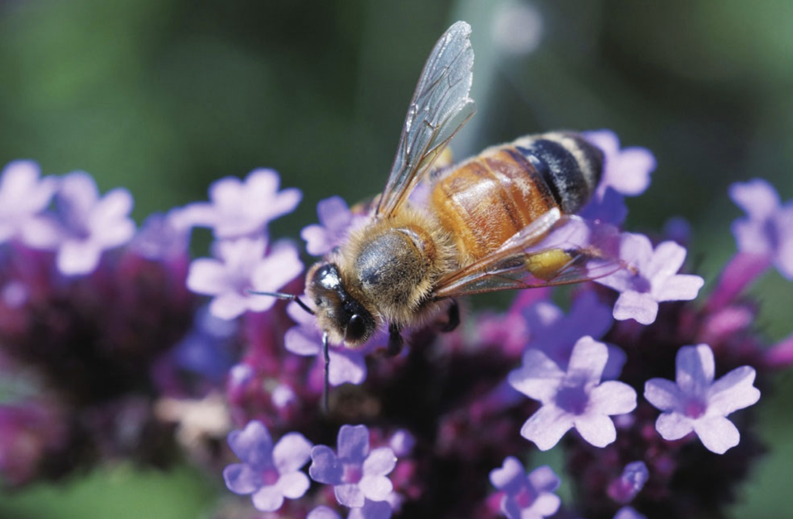
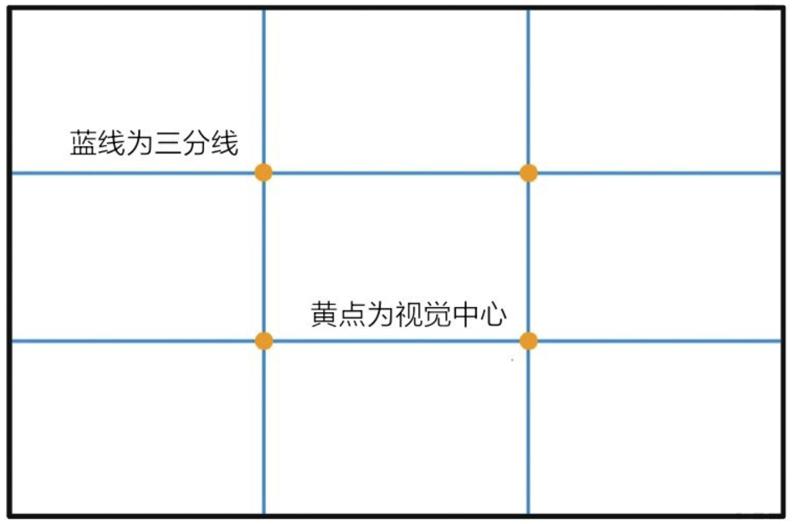

前言
摄影是什么？
摄影和绘画、文字、音乐一样，都是一个载体，一个将创作者的思想或意图传达给读者（观众、听众）的载体。
简单地说就是，此时此刻我看到了某个场景，我心生感触，然后将其拍摄下来。等你看到我拍摄的这张照片时，你也会有我当时的感触。
摄影要完成的三件事：
- 到达并发现某个场景。
- 熟练操作相机。
- 用自己的摄影技术将这个场景尽可能地表达好。
解释：
- “熟练操作相机”其实是很容易达到的——相机说明书。
- “用自己的摄影技术将这个场景尽可能地表达好”似乎也不难，只要掌握足够的摄影技巧——本书《摄影笔记》。
- 摄影真正难的就是：“到达并发现某个场景。”这需要你有能力到达，也需要你有阅历去发现——人生。
好照片是什么？
三个标准：
- 好照片必须有一个鲜明的主题：你拍摄这张照片的时候感受是什么，或者说想带给观众的感受是什么，这是你拍摄一张照片的主要意图。
- 照片必须把注意力引向被摄主体：用来突出主题的着眼点，在画面中是应该让人一眼就看到，并且目光停留时间最长的点。
- 尽量简洁：画面中非主体的其他内容尽量只发挥到衬托、烘托的效果，就足够了。
如何拍到一张好照片
整个摄影技术就是为了实现上面的三个标准：
- 明确主题
- 突出主体
- 简化画面
能够实现这三个目标的摄影技术主要是四个方面：
- 取景
- 曝光
- 虚实
- 构图
1 数码相机
1.1 数码相机机身简介
数码相机的种类：
- 单反
- 无反
- 一体机（小DC）
单反
数码单反相机由机身和镜头两个主要部分组成。单镜头取景拍摄和反光镜反光是单反相机名称的由来，也说明了单反的工作原理。
单反相机工作时，光通过镜头进入机身，光线一分为二：
- 一束光在反光镜上通过对焦机构进入五棱镜，之后再通过五棱镜到目镜里。通过光学取景器，可以取景、构图、对焦。
- 另一束光传递到感应器，用于识别场景、测光和设定白平衡。按下快门时，反光镜抬起，快门帘打开，全部光线落在电子感光器上，被影像处理器处理后传输到储存卡中记录下来。
无反
无反相机又被称为微单或者单电，与单反相机最大的区别在于无反相机取消了单反相机的反光镜，直接通过传感器电子取景。
无反相机工作时，光线通过镜头落在电子感光元件上，被影像处理器处理后传输到储存卡中记录下来。
与单反相机不同的是取景方式，无反相机没有反光镜，所以取景也是通过电子感光元件——传感器取景，图像最终呈现在电子取景器（EVF）或者液晶屏上，这一点就好像数码单反相机使用实时取景一样。
因为没有了单反相机中的反光镜，所以无反相机的体积相比单反相机来说小巧很多。这避免了单反相机最大的弊端——太大太重。
小DC
小DC相机正式名称应该是机身镜头一体式相机，顾名思义，相对于单反和无反相机来说，小DC不能换镜头是其最大的弊端，尽量选择可换镜头相机。
传感器尺寸
传感器尺寸又被称为画幅。
- 红色为全画幅尺寸 36mm×24mm
- 绿色为索尼尼康宾得APS-C画幅尺寸 23.5mm×15.6mm
- 黄色为佳能APS-C画幅尺寸 22.3mm×14.9mm
- 蓝色为奥巴松下M43画幅尺寸 17.3mm×13mm
- 橙色为1英寸画幅尺寸 13.2mm×8.8mm
对于传感器而言，无疑尺寸越大越好。
1.2 镜头介绍
了解一支镜头的特点或用途，主要有如下几个参数，比如佳能的EF 70-200mm f/2.8L IS USM II：
- 种类：EF表示EOS相机卡口的镜头。其他的还有EF-S只适用于佳能APS-C画幅EOS相机的镜头；MP-E放大倍率在1倍以上的微距摄影镜头；TS-E移轴镜头。
- 焦距：70-200mm表示这是一个广角端为70mm，长焦端为200mm的变焦镜头。如果只有一个数值那么就是定焦镜头。
- 最大光圈：f/2.8表示这支镜头全焦段的最大光圈是恒定的2.8。有的镜头会有两个数值，分别表示广角端和长焦端的最大光圈。
- 特性：L表示佳能的专业级镜头，同时镜头前端也会有红圈。IS表示具有防抖功能。USM表示具有超声波马达。II表示这是这个镜头的第二代产品。
其中有两大参数是非常重要的：
- 光圈：光圈是表示镜头明亮程度的参数。
- 口头上的光圈越大，数值f/越小。
- 光圈越大，单位时间内镜头的通光能力越强，这支镜头往往也越好。
- 焦距：焦距不同拍摄范围也不同。
- 焦距越短（数字越小），视角越大，拍摄画面所能容纳的范围就越广，但是单个景物在画面中会很小；
- 焦距越长（数字越大），视角越小，拍摄画面所能容纳的范围就越窄，但是单个景物会被放得很大，类似于望远镜。
2 焦距与取景
2.1 焦距与题材
鱼眼
鱼眼会呈现一种特殊效果，题材也很广泛，说白了就是你想拍得不一样的时候就可以用鱼眼玩。尤其适合一些大场景的拍摄。
超广角
超广角一般指的是24mm以下的焦距，因为视角大，所以适合拍摄大场景，建筑啊，风景啊。因为往往可以离很近拍摄，所以有很强的视觉冲击力，也很适合新闻摄影拍摄。
24mm和28mm
标准的广角焦距，主要就是用来拍摄风景。当然拍摄到此一游照也是很好的。
35mm
大师的焦距，也被称为人文眼。简单地说就是拍摄人文最好的焦距。
拍摄人文照片的时候需要主体和背景环境的关系，所以小广角的35mm既能够将背景囊括进来，又能突出人与环境的关系，这是拍摄人文的关键。
50mm
标准镜头，拍摄人文、人像都是很好的，也是大师的焦距。
85mm
拍摄人像的焦距。能有很好的背景虚化效果，很好的画面裁切能力，还能保持和模特之间适当的交流距离。主要用于模特大头照或者特写。
100mm
最热门的一些微距镜头。因为拍摄距离适中，在拍摄昆虫等题材的时候，不会打扰到你拍摄的主体。同时也因为保持了一定的拍摄距离，不会造成太大的透视效果，让拍摄主体看起来没有变形。
135mm
也是拍摄人像的焦距，就是需要离人远一点。所以适合拍摄人物特写，如果要拍全身像，可能就要离人物很远了，这样会妨碍交流。
200mm和300mm
长焦，拍摄远处的景物啊，鸟类啊，荷花啊，运动啊。也有不少用这个拍摄人像的，因为大光圈的背景虚化效果很强烈。
超长焦
300mm以上，野生动物、运动题材等，也用于狗仔偷拍什么的。拍日出日落，满月弦月什么的也挺好的。
等效焦距
镜头上标注的一般都是实际焦距，但是因为传感器有大有小，会对这些实际焦距取景范围有截取，造成拍摄的视角与实际焦距原本应该有的视角不相同。
每个不同尺寸的传感器都有一个系数与之相对应，这个系数乘以实际焦距之后，就是等效焦距了。这个系数就叫镜头转换系数：
- 全画幅尺寸传感器的镜头转换系数就是1.0，就是实际焦距多少，等效焦距就是多少。
- APS-C尺寸传感器的镜头转换系数是1.5（尼康、索尼、宾得、富士等），或者1.6（佳能），实际焦距乘以1.5或者1.6就是他们镜头的等效焦距。
- M4/3的镜头转换系数是2，所以实际焦距乘以2就是等效焦距。
- 1英寸传感器的镜头转换系数是2.7，所以实际焦距乘以2.7就是等效焦距。
2.2 透视与焦距的关系
透视与焦距
透视：近大远小。
- 透视和焦距没有直接关系，只与拍摄距离有直接关系。离得近，透视强烈；离得远，透视不强烈。
- 广角镜头可以让画面有很强的纵深感，而长焦镜头会让画面更加扁平。因为广角往往离得近，所以透视效果明显。因为长焦拍摄往往离得远，所以透视效果不明显。
对于人像拍摄来说，没有哪支镜头是唯一适合拍摄人像的：
- 拍摄特写或者大头照的时候，我们可以选择85mm；
- 半身像的时候，我们可以使用50mm镜头拍摄；
- 至于全身像，我们可以选择35mm或者24mm；
- 如果你想拍那种特别夸张的大长腿，还可以用超广角拍摄，因为要离得特别近。
透视与畸变
畸变：拍摄四方形的物体时，使周围拍成涨鼓或内缩的现象。
- 在广角端，我们拍摄的四方形的物体往往会出现涨鼓的畸变，让四方形变成了一个木桶的形状，所以也被称为桶形畸变。这是多数广角镜头都表现比较明显的。
- 在长焦端，我们拍摄的四方形的物体往往会出现内缩的畸变，让四方形变成了一个古代枕头的形状，所以也被称为枕形畸变。因为枕型畸变表现都不太明显，所以往往被忽略。
畸变的一个显著特征就是让直线变成了曲线。
畸变是让直线变曲线，而透视只是让竖直变斜线。
2.3 取景
取景范围
摄影首先要确定的就是我们的取景范围。
对于取景范围我们要遵循的原则只有这样一条：能够明确你的主题，突出你的主体，简化你的画面。
- 对于表达主题有帮助的，留下；
- 对于表达主题没帮助的，去掉；
- 对于表达主题有帮助的取景方式，采用；
- 对于表达主题没帮助的取景方式，不用。
可以改变焦距来改变取景范围，比如使用焦镜头变焦，也可以选择不同焦距的定焦镜头来实现。当然，如果你镜头焦段有限，那么就只能“变焦靠走”了。
改变焦距，缩小取景范围：
改变焦距，扩大取景范围：
取景角度
高角度和低角度：
- 在拍摄某些场景的时候，如果高角度拍摄，可能前景就会在画面中占很大部分。
- 但是前景对于照片的主题并没有太大作用，而且显得比较杂乱，会夺人眼球。那么不如蹲下，采取比较低的机位，换一个取景角度，这样拍摄出的画面就会干净很多。
改变透视效果：
- 换一个取景角度还可以达到改变主体各个位置与相机之间的距离，到达不同的透视效果。
- 比如女孩子在自拍的时候如果拍摄角度是仰拍，下巴离相机较近，近大远小，就会变成一张冬瓜脸。如果相机从上面俯拍，女孩子下巴离相机较远，就会变成一张瓜子脸。
3 影调
3.1 什么是影调
定义：指一张照片的明暗程度。
- 明亮的照片就是高调
- 阴暗的照片就是低调
- 不亮不暗的就是中间调
作用：通过明暗的表现给观者以相应的感受来表达摄影师的创作意图——明确主题、突出主体、简化画面。
本来就是高调的物体基本上都是白色或者浅色的；本来就是低调的物体基本上都是黑色或者深色的。
- 本身就是高调的物体：雪、白馒头、白衣服、白纸、棉花……
- 本身就是低调的物体：煤炭、黑色皮鞋、黑色的衣服、夜晚的天空……
我们之所以能够看到世间万物是因为光线照射到物体上反射到我们的眼睛中。极白和极黑分别位于光谱的两端，在极白和极黑中间的灰色实际上反射了18%的入射光。
18%灰为中性灰，表示中间调。
中间调=极白与极黑的中间点=18%灰
并不是说中间调的照片一定是灰蒙蒙的，看起来鲜艳的照片往往都是中间调的，蓝天白云，绿草林荫，姹紫嫣红一般都是中间调。
大多数照片都是中间调，少数场景需要用高调或者低调来表现。
3.2 影调的量化
相机中有一个非常标准的量化体系——曝光补偿。
- 相机给你的曝光就是中间调的。你拍的东西亮，就往亮了补偿补偿；你拍的东西暗，就往暗了补偿补偿；中间调就不补偿。
- 曝光补偿的单位是EV，当光标处于标尺的0刻度时，就是0EV，也就是相机内测光系统测出的你选择的测光区域的中间调。光标越向正方向移动，影调越高，越亮；光标越向负方向移动，影调越低，越暗。
- 18%灰时为0EV，+1EV就是0EV亮度的2倍，+2EV是+1EV的2倍。也就是说，每1EV的差距就是亮度2倍的关系。
测光系统
相机的测光系统主要可以分为三种：
- 智能测光（每个厂商叫的名称不同，但是一般都是默认项）：将画面分割成很多个区域，然后判断各个区域的曝光以及在画面中的重要性。最后加权得出一个相机认为正常的曝光。
- 中央重点平均测光：重点考虑中心主体的曝光，然后加权其他背景的曝光。
- 点测光：对画面中的一点测光，这个点一般很小的，画面中1%～3%的面积。
建议尽量使用相机最智能的测光模式。
3.3 控制影调
控制一张照片的影调其实就是调节曝光补偿：
- 只要在曝光补偿标尺上看到曝光补偿标尺在0的位置，那么这张照片就是中间调的；
- 在曝光补偿标尺显示为正值，则为高调，正值越大照片越明亮；
- 反之曝光补偿标尺显示为负值，则为低调，负值越大照片越昏暗。
如何控制曝光补偿：
- 相机上有一个曝光补偿按钮可以调节曝光补偿，在程序曝光（P挡）、光圈优先（A挡、Av挡）、快门优先模式（S挡、Tv挡）时，按下曝光补偿按钮（对角线半黑半白的方形标识，内有“+”和“-”号）就可以调节曝光补偿了
- 能够调节曝光补偿是P挡与AUTO挡（自动挡）最大的区别。也是在光圈优先和快门优先可以直接控制照片影调的唯一手段。
4 控制曝光补偿三要素
4.1 三要素是什么？
平时我们说的曝光就是控制影调，控制一张照片的明暗。
一张照片的明暗是由感光器接收了多少光，并且有多大能力将光转化为呈现在照片上的明暗能力决定的：
照片的影调=曝光量×呈现能力曝光量就是感光器在曝光时间内接收到光的多少：
曝光量=感光器接收光的速度×曝光时间感光器接收光的速度就是单位时间内光线通过镜头的量。
- 外界光线强的时候，这个速度肯定要快些，外界光线弱的时候这个速度肯定要慢些。
- 此外在镜头里面，有一个由很多叶片组成的可以控制大小的“闸”，这个“闸”的作用就是控制进光的速度。这个“闸”就是光圈。
感光器接收光的速度=环境光的强度×光圈曝光时间就是快门开启的时间，也简称快门。
因此：
传感器接收光的总量=光线强度×光圈×快门照片的影调=光线强度×光圈×快门×呈现能力传感器对于光的呈现其实就是感光度。感光度就是感光器对光线的敏感程度，反映在相机上就是一般我们所看到的ISO值。ISO值越高，感光器对光线越敏感。
照片的影调=光线强度×光圈×快门×感光度对于摄影师来说，控制照片的亮度，在多数情况下就是控制快门、光圈和感光度。
用相机控制的影调=光圈×快门×感光度4.2 光圈、快门和感光度
光圈、快门、感光度，被称为曝光三要素。
光圈
光圈口头上作为光圈值的简称，但实际上更多地反映孔径的大小：
- 光圈越小，光圈值越大，曝光量越小。
- 光圈越大，光圈值越小，曝光量越大。
因此，光圈与曝光量成正比，光圈数值越小光圈越大。
光圈值常见的有：f/1、f/1.4、f/2、f/2.8、f/4、f/5.6、f/8 、f/11 、f/16、f/22、f/32。每一挡光圈值都是1.4倍（根号2）的关系。
光圈每增大一挡（光圈值变小一挡），孔的面积变为原来的2倍，通光量也变为原来的2倍。
一般来说，光圈比f/2.8大的就算大光圈了（f/1、 f/1.4、 f/2 、f/2.8），光圈比f/8小的就算小光圈了（f/8 、f/11、 f/16、 f/22 、f/32）。
快门
快门就是曝光时间的简称：
- 快门越快，曝光时间越短，相对来说曝光量越小。
- 快门越慢，曝光时间越长，相对来说曝光量越大。
常见快门值有：30秒、15秒、8秒、4秒、2秒、1秒、1/2秒、1/4秒、1/8秒、1/15秒、1/30秒、1/60秒、1/125秒、1/250秒、1/500秒、1/1000秒、1/2000秒、1/4000秒、1/8000秒。
每一挡快门之间都是2倍的关系，快门每调慢一挡曝光量就变为原来的2倍。
一般来说，比1/250秒快的就是高速快门。比1/60秒慢的就是低速快门。
感光度
感光度就是感光器对光线的敏感程度。
- 感光度高的时候可能很弱的光也能在照片上得到较亮的效果。
感光度在相机中对应的是ISO值。一般常见的ISO值有6、12、25、50、100、200、400、800、1600、3200、6400、12800、25600、51200、102400。
每一挡ISO值基本都是2倍的关系，也就是说ISO值每提升一挡，感光器对光线的敏感程度就变为上一挡的2倍，每提升一挡感光度，达到同样照片影调的曝光量只需要之前的一半即可。
一般来说，ISO的标准值是ISO 100。部分厂商的ISO标准值是ISO 200。
CCD和CMOS的感光度越高，CCD和CMOS越容易被电信号干扰，照片的噪点越多，所以看起来也越粗糙。所以在拍照时摄影师都尽量选择较低的感光度（标准值）。
4.3 互易律
互易律就是按比例同时改变光圈、快门和感光度，而曝光值不变。
无论光圈、快门还是感光度都是每挡之间2倍的曝光的变化，所以：
- 如果感光度不变，光圈开大1挡同时快门速度加快1挡得到的照片的明暗程度是相同的，反之亦然。
- 如果光圈不变，感光度提高1挡，同时快门加快1挡得到的照片的明暗程度是相同的，反之亦然。
- 如果快门速度不变，光圈开大1挡，同时感光度降低1挡得到的照片的明暗程度是相同的，反之亦然。
曝光的量化
光圈、快门和感光度每挡之间的亮度差距是2倍的关系，换而言之就是1EV。
每调节曝光补偿1EV，也是亮度差了2倍的关系。那么现在我们可以将曝光三要素以及影调整体结合起来计算。
假设环境光与感光度不变，当f/5.6 1/30秒 的组合时影调是0EV时：
- f/16 1/4秒 的组合时影调也是0EV；
- f/11 1/4秒 的组合时影调会是+1EV；
- f/11 1/2秒 的组合时影调会是+2EV；
- f/11 1/30秒 的组合时影调会是-2EV。
如果感光度我们也调一调，环境光不变，当f/5.6 1/30 ISO 100时 曝光补偿显示0EV：
- 则f/16 1/4 ISO 100 时0EV；
- f/11 1/4 ISO 50 时0EV；
- f/11 1/60 ISO 200时 -2EV。
5 曝光组合
5.1 什么是曝光组合
曝光组合就是拍摄时光圈和快门的设定值。
手动曝光功能：
- Av、A挡 光圈优先
- Tv、S挡 快门优先
- M手动（手动控制光圈、快门）
绝大多数时候，环境光是不受控制的，而同一场景下也几乎不会反复操作感光度，所以大多数时间照片的明暗就是通过摄影师控制光圈和快门这两个关键要素来决定的：
摄影师控制的影调=光圈×快门假设环境光不变，感光度不变。影调、光圈、快门，3者之中只要有2个被确定下来，第3个数据也会被确定。
M挡：
当相机处于M挡时，摄影师手动设定光圈值和快门。
设定之后，相机信息窗会显示曝光补偿的标尺，以提示目前的影调。
比如，当摄影师将快门速度设定为1/4秒，光圈为f/4.0时，曝光补偿标尺显示为-1EV。如果我们要一张正常曝光（0EV）的作品，我们可以调慢一挡快门，或者加大一挡光圈。
真正的摄影师在M挡手动曝光的时候，其实是不看曝光补偿标尺的。如果你使用M挡手动曝光，就请忽略掉相机的测光以及曝光补偿标尺的指示。
拍摄时相机拍摄的环境光是会变化的，单是相机换一个角度也会因为镜头里的被摄物反光率不同而面对不同的环境光。所以在设定好快门和光圈之后，对着天空是一个影调，对着大地可能又是另一个影调。这样在用M挡拍摄的时候，我们可能会因为摄影主体的不断变化而一直在每次按下快门前重新设定光圈和快门。如果这样，那么摄影师会因为这些错过很多精彩瞬间，尤其在体育新闻类摄影中。
如果还是以相机的测光作为参考，那么直接调节曝光补偿到你希望的曝光反而更加方便。
这时候就更加推荐另外两种曝光模式：直接确定影调的模式——光圈优先和快门优先。
A挡、S挡：
- 将设定快门和光圈中的一项变为设定影调（曝光补偿）
- AV A挡 光圈优先：摄影师设定影调（曝光补偿）和光圈，相机会自动选择合适的快门速度。
- TV S挡 快门优先：摄影师设定影调（曝光补偿）和快门，相机会自动选择合适的光圈。
- 光圈优先和快门优先都有设定影调的特点。多数场景，我们不需要改变影调，而且需要相对固定的光圈值和快门，所以用A挡或S挡的拍摄我们只要构图之后按快门就可以了。
5.2 光圈优先
可以设定光圈和影调，相机本身提供快门速度，也就是说你确定了光圈和影调，相机自动给你计算互易律，为你提供一个能满足你光圈、影调的快门值。
用光圈优先模式，一般都是对光圈有特殊要求或对快门速度没有特殊要求时使用的。
使用步骤：
- 调整影调。调整影调的方法是直接调节曝光补偿。因为在拍摄同样一个题材或者场景的时候，很少会反复调整影调，所以基本调整到自己需要的影调之后就不用再频繁调整了。
- 接着调整光圈，将光圈调整到需要的大小。
使用场景：
- 比如在拍摄人像时，大光圈可以获得浅景深，虚化掉背景，将主体人物从复杂的背景中剥离出来。

- 又比如拍摄一些风景照时，广角加小光圈可以获得深景深，使得远近的景物都清晰。这种方法被称为超焦距摄影。
实际上，多数时候摄影师都是通过控制光圈来实现创作意图的，所以很多从事新闻行业的摄影师都常用光圈优先模式。因为无需过多操作，同时对于创作意图能够有效控制，也应该是初学者最常用的模式。
5.3 快门优先
设定快门和影调，相机本身提供光圈大小。
用快门优先模式，一般都是画面中有移动物体的时候。
使用步骤：
调整影调。
调整快门速度。
使用快门优先，往往会在拍摄一张或一组照片后，查看一下效果，继续预估准确快门值并重新调整快门，直到满意为止。
使用场景：
- 可以调节到高速快门，这样可以帮助我们凝固一个动感的瞬间。
- 同样，我们可以控制快门在一个较慢的速度上，以完成更多的创作。
总之，当我们使用快门优先模式时，往往都是要控制画面中的动态效果，或凝固，或流转。这就是快门优先的意义。
5.4 手动模式
可以设定快门速度和光圈大小，相机只是提示你影调将会是什么样子的。
使用M挡手动曝光情况都是你无法使用相机测光的时候，其实等于你放弃了相机测光。
使用场景：
- 环境光频繁变化的时候。拍摄的那一刻可能光线和你测光时的光线不同了。所以使用M挡根据经验可能更准。
- 使用闪光灯的时候。拍摄时与测光的光线完全不同了，因为测光的时候你的闪光灯不会闪，但是拍摄的时候闪光灯会闪。所以根据闪光灯的功率算一算使用什么光圈和ISO就行了，快门速度已经不是很重要了。
- 超过曝光补偿调节范围的时候。一般来说相机调节曝光补偿在±3EV，高级一点的±5EV。如果需要更过曝或者更欠曝，那就需要M挡来调节了。
- 固定的曝光参数拍摄很多自然场景的时候，曝光参数是固定的。比如满月，我拍摄满月的曝光参数就是1/500秒（不需要三脚架了）、f/5.6、ISO 200。稍稍能把月亮拍得白一点。拍摄银河的话就用30秒，f/2.8, ISO 3200。
6 光线
6.1 光线的特性
光的三个特性：
- 强度。光的强度与光源的能量距离以及传播介质有关。直观的感觉就是光的明暗程度。
- 方向。就是光源的方向。但是在多光源或者漫反射的情况下就不太容易确定方向。
- 色温。主要表现在光源的颜色上。
光线的强度
抛开传播介质不谈，光的强度与光源能量和距离的关系是：
- 光的强度与光源能量成正比，光的强度与光源距离的平方成反比
举例来说，当光源的亮度变为原来的2倍时，相机接收到光的强度也变为原来的2倍，也就是增亮了1EV。当光源的距离变为原来的2倍时，相机接收到光的强度则要变为原来的1/4，也就是减暗了2EV。
因此，当光源的亮度变为原来的2倍时，相机接收到光的强度也变为原来的2倍，若要维持影调不变我们需要将光圈缩小一挡，或者将快门加快一挡。
光线的方向
光源方向可以分为四种：
- 顺光——光源在被摄体正面：在摄影中最常用到的光源方向，适合拍景，不太适合拍人，因为会消除面部一切影子，使面部平面化，也称为平光。
- 侧光——光源一般在被摄体正面45°的位置：一般用在人物摄影的造型上。相比顺光会将人物拍成“大白脸”，侧光能够让人物的面部呈现立体效果。
- 90°侧光——光源一般在被摄体90°的位置：90°侧光是用来强调明暗对比的特殊光线。被摄体一面处于强光中，另一面则完全处于阴影中。最适合用来表现被摄体表面的质感。
- 逆光——光源在被摄体背面：往往会有雾蒙蒙的感觉，并形成暖色调。这就是目前比较流行的一种日系的拍法，但是这样子的光会形成一层浓重的光雾，显得照片非常不通透。降低影调，可以让这种光雾消散。
色温 & 白平衡
色温是指光色的尺度，单位是K。
一个不发光的黑色的物体——绝对黑体。当我们把它加热之后，随着温度的升高，绝对黑体会先发出红光，随后越来越亮，变成黄光，再变成白光，直至蓝光。
蓝色是冷色，但是色温高；红色是暖色，但是色温低。
白平衡（WB）：将在不同环境色温中的白色物体都还原成真的白色。
- K：当在K这个选项时，你可以手动调节色温的数值。只要将K模式调节到当前环境的色温，就能将所有的景物的色彩还原到其本色。除非你知道环境色温到底是多少，你才能调节。要不然K这个选项相当不好用。
- 场景模式：在相机内部一般都预设了很多场景。比如云彩的图标表示多云，比如房子图标表示阴影，再比如灯泡的图标表示白炽灯，你所在的环境是哪种，就在白平衡选项里选择哪种场景，一般来说都差不多。
- 自定义白平衡：原理就是，找一个白色的东西，相机就会以这个白色的物体作为基准白色，其他任何在这个环境色温中的物体的颜色就都校正过来了。使用自定义白平衡之前一定要先在你要拍摄的场景中设定一下自定义白平衡。
- AWB：AUTO WHITE BALANCE，自动白平衡。相机会根据环境判断在这个场景中对环境色温大概做一个判断，然后自动设定色温，尽量将白色还原成白色。好处就是特别方便，因为一切都是自动的。坏处就是遇到色温特别高或者特别低的时候，总会不准。不过还是最推荐，AWB+RAW拍摄，是一个既方便，又保险的组合。
6.2 光线的分类
光线按照类型分可以分为：
- 自然光：我们在户外遇到的光线基本上就是自然光了。自然光就是太阳直接提供给我们的光。这个似乎不太能改变。
- 场景光：我们在室内遇到的光线基本上就是场景光。这包括窗口进来的阳光、室内的灯光等。这个似乎也不太能改变。
- 人造光：指摄影师为了达到创作意图而设置的人造光源。布光灯和闪光灯都属于人造光，至于你打的反光板的反光也可以看作人造光。人造光就是你可以一边拍摄一边控制的光源。
自然光
主要就是以阳光作为光源。但是阳光在不同的时间不同的天气会有不同的呈现效果。
- 日出之前和日落之后自然光色温很高，颜色冷艳迷人，但是光线强度很低，有着一种神秘的气息。
- 日出日落时的光色温很低，光线温暖柔和，因为光线强度低，所以是拍摄太阳最好的时刻。
- 白天的光线色温居中，不会给景物染上任何颜色，光线的强度也是最强的。在白天的日光下最容易拍出缤纷的颜色的。
- 在阴天或者雨天的时候，天空的光仍然保持色温居中，但是光线强度弱了很多。这时候天空好像一个大的柔光箱，光线不再是从太阳一点发射过来，而是从整个天空散射下来。这时候是没有很强的反光和很硬的影子的。
在户外拍摄人物的时候，不要有太强的光线。所以在正午的大太阳下面拍摄人物是不合适的。可以选择阴天、日出后一小时或者日落前一小时拍摄。
在自然中还有一种叫“耶稣光”的现象。耶稣光又称丁达尔现象。就是一束光通过胶体时，在光路的垂直方向可以看到整条光路。空气就是一种胶体，而阳光被某些东西遮挡时，往往只能有几束光通过空气到达地面。这时就很容易看到丁达尔现象，也就是所谓的耶稣光了。这样的光其实很常见，能够给你美和神圣的感觉。
场景光
在室内遇到的光线基本都是场景光。
场景光的两大特点就是：光源复杂、强度一般较弱。
怎么利用场景光只能是具体场景具体分析。
对于光源复杂，我们就要分析光源的色温和光源的方向。这其中光源的方向尤其重要。只有掌握好光源的方向才能对主体正确曝光。
人造光
只要是人造光就有这样的一个特点：不论是光的强度、方向、色温都是完全由摄影师控制。
持续光源和闪光灯的区别就是，一种是一直可见的，一种是短暂存在、需要预见的。
对于强度的控制：持续光源可以通过测光来确定正确的影调，而闪光灯就需要预判。
闪光指数：标明闪光灯光强度的指数，通常用GN值表示。
举例来说：闪光灯GN值为60，表示在ISO100、焦距为105mm的情况下，闪光灯指数为60。
感光度增加2挡（变为原来的4倍），GN值变为原来的2倍。
光圈加大2挡（光圈值变为原来的1/2），GN值变为原来的2倍。
距离缩短为原来的1/2, GN值变为原来的2倍。
GN值相差1倍，强度相差2EV。对于方向的控制：不论持续光源还是闪光灯，光源的方向完全由摄影师根据需要摆放灯的位置决定。
布光法中的灯位：
- 正面光：光比较“硬”，效果比较“楞”。人物面部曝光均匀，但是平面化，没有立体感。这个位置的灯光一般用于辅助光。
- 顶光：光线从上方打下来，使人物面部非常阴郁。在我们一开始的学习中将不会采用这种方向的光源。
- 鬼光：从模特下方射过来的光线会让模特看起来异常恐怖。如果想营造恐怖氛围，可以选择使用。
- 45°侧光：从45°侧面布光。模特面部呈现立体的表现，但是阴影过于浓重。45°侧光常常作为主灯使用。
- 90°侧光：90°侧光会产生一半明亮一半处于阴影中的效果。一般有艺术化处理的时候，才会用。拍摄正规人像时不会用到这样的光。
- 背景光：作用非常简单就是提亮背景用的。在人像摄影时常常配合主光和辅光一起使用。
伦勃朗布光法：
- 四分之三面部对着相机。让人物面向相机，缓慢变换角度，直到看不到一侧的耳朵为止。
- 架设主灯，强度要能使人面部正确曝光，方向为与人物面部方向同一侧45°左右。注意，要在人物面部形成三角形光区（以鼻子阴影、面颊阴影、下眼线为边长，围成的三角形亮区）。
- 架设辅灯。将面部阴影处柔化，并表现出细节。一般会使用4:1或者3:1的光比。
- 架设背景灯，打亮背景。如果有可能从人物斜后方放置一束比较集中的光，打在人物轮廓上，形成轮廓光。

伦勃朗布光法主要能够表现出深邃和坚毅。能够强调面部的线条。所以更适合对于男士的摄影之中。对于女孩子就不太适合了。
蝶形布光法：适用于女性摄影的布光法。使用蝶形布光法的时候，主灯放置在人物正前方，但是处于比较高的位置。这与顶光不同。蝶形布光法的主灯是从上斜射下来的。这样在人物的鼻子下方就会形成一个阴影。随着主灯高度变化，阴影会在鼻子下面形成一个蝴蝶的形状。这时主灯的位置就可以确定了。这样布光最大的好处就是能让女孩子看起来更像瓜子脸。脸小自然就上像。然后用两盏辅灯将人物的轮廓和背景打亮，使人物和背景分离开。如果需要可以再添加背景光。
7 正确的曝光
7.1 正确的曝光
一般来说：
- 如果你希望拍摄高调作品，就将调节曝光补偿向“正数”的方向调节。正数越大，照片也就越亮。
- 如果你希望拍摄低调作品，就将调节曝光补偿向“负数”的方向调节，负数的绝对值越大，照片也就越暗。
- 如果想要一幅中间调的作品，那么保持曝光补偿为0就可以了。
选择什么影调要符合你照片的主题：
- 欢快的、年轻的、明艳的题材，可以尝试用高调来表现。
- 欢快的、年轻的、明艳的题材，可以尝试用高调来表现。
- 一般拍摄的时候，我们选择中间调就可以了。
此外要考虑物体本来的颜色，白加黑减：
- 如果你拍摄的主体本身就是很白很亮的，为了把主体曝光准确，我们往往也要加曝光补偿。比如白纸、白雪、皮肤白白的小孩。
- 如果你拍摄的主体本身比较黑，那么就要适当减少曝光补偿。比如煤堆、黑色的皮包、黑肤色的人。
调整曝光的方式：
- 在程序曝光（P挡）、光圈优先（A挡）、快门优先（S挡TV挡）的时候，直接调整曝光补偿。
- 而在手动曝光（M挡）的时候，需要调节光圈、快门、感光度的组合来控制曝光。
在拍摄的时候还要注意你拍摄的景物的光线，对于光线的强度：
- 正午的太阳作为光源的场景，往往是光线强度很强的场景。这时候我们很难使用大光圈镜头，比如f/1.4以上的。因为纵然你的快门速度提高到1/8000秒，感光度降到ISO 100还是有可能过曝的。这时候你只能缩小光圈，或者在镜头前面加中灰滤镜（ND镜），减少通过镜头光线通过镜头的速度。
- 对于暗光环境，我们往往就要开大光圈，曝光时间也要多些，同时必要的话不要吝惜提高感光度。虽然提高感光度会影响画质，但是总比快门速度太慢造成的手抖要好。
对于光线的方向：
- 一般来说我们要顺光拍摄。
- 拍摄人物的话45°侧光，有助于人物造型。
- 90°侧光用于表现表面质感。
- 逆光的时候呢，可以玩点小创作。
对于光线的色温：
- 温暖的题材可以用低色温的暖色系。
- 冷艳的题材可以选择高色温的冷色系。
7.2 大光比强反差
如果画面中有很亮的地方，也有很暗的地方，当我们把亮的地方拍得暗一些，能看到细节了，突然发现很暗的地方死黑一片了。如果我们将很暗的地方拍亮，倒是暗的地方有细节了，亮的地方又死白一片了。如果不管他们，就对中间亮度的地方曝光，结果亮的地方和暗的地方同时出现死白或者死黑的情况。
光比：一般指摄影中，被摄场景的暗部和亮部的受光比例。说白了就是亮的地方到底有多亮，暗的地方到底有多暗，亮暗放一起反差到底多大。
宽容度：容纳的景物亮度反差的范围。
五个办法：
- 白就白吧，黑就黑吧：比如逆光拍人像的时候，如果正常曝光人脸一定是黑的。所以增加曝光补偿，让人脸正，不过背景可能就死白了。逆光拍人像还可以拍成剪影。正常曝光或者减点曝光补偿，让人死黑，不过人的轮廓要清晰，形成剪影也是很好的。
- 提亮暗部，压暗亮部：提亮暗部主要通过人造光或者利用环境光为主体补光。比如拍摄逆光人像的时候，我们可以给人补光，提亮主体。压暗亮部的方式就是阻碍亮部的光进到镜头里。其实方法也很简单，比如我们在拍摄日出日落的时候，常常使用中灰渐变镜来对亮部区域进行减光。
- 换个角度，换个时间：中午光线强，可以日出后一小时或者日落前一小时拍摄人像。逆光拍摄的，可以换个角度变顺光。阳光下反差大的，可以挪个地方。
- HDR：一个场景，拍摄几张不同曝光的照片，把亮的暗的都照顾到，都拍出细节。然后合成为一张，亮部就用亮部细节保留好的那张，暗部就用暗部细节保留好的那张。可以利用相机的包围曝光拍摄一张“欠曝”的、一张“正常”的、还有一张“过曝”的照片。然后利用图像处理软件的HDR功能将这三张合成起来。
- 拉上拉链：说：“光线不好的时候我不拍。”
7.3 摄影绘画
如果一张照片你曝光欠曝了，也许通过后期还能挽救。画质会差，但是好在还是可以挽救的。但是一旦过曝了，很多区域变成了白色，你就永远不能将这个区域进行改变了。也许一张照片就废掉了。
因此，对于曝光来说“宁欠勿曝”。
光绘，顾名思义就是利用光线在照片上进行描绘。我们常见的光绘照片都是在暗光环境中拍摄的。而我们的画笔往往就是某个发光的物体，可以是焰火、可以是手机屏幕、可以是手电筒，等等。
光绘需要在暗光情况下进行长时间曝光，因为环境光暗，所以画面成曝光不足的低影调状态。同时在长时间曝光的这段时间内，拍摄者或者其助手利用发光物在环境中描绘既定的图案，这时发光物发出的光线就会留在画面中，形成光绘。
需要注意：
- 曝光时间到底多长？曝光时间主要是以你能从容完成光绘动作为宜。曝光时间的长短主要和三个因素有关。第一个就是环境光线的亮暗，一般都找比较暗的。感光度一般来说越低越好。
- 使用的发光体到底多亮才好？这个其实是由光圈快门感光度决定的，如果实际测测光肯定最好。但是其实掌握一个原则就好，就是发光体明显比环境光亮就行了。
7.4 多重曝光
多重曝光的意思就是在同一张照片中采用两次或者更多次的独立曝光，然后将每次曝光的光量重叠起来，最终呈现在单一照片中的手法。
多重曝光同样是在一张“黑色画布”上，利用光线的堆叠进行创作，所以就有一个原则需要记住。以两次曝光为例：当照片中亮区相互叠加时，会显得是两张半透明的照片重叠在一起。当照片中区域是一亮一暗重叠时，这个区域会显示出亮区的图像。当照片中两个都很暗的区域重叠时，那么图像就是黑乎乎的。
如果想重点表现某张照片曝光的重点区域时，我们可以让这个区域和其他曝光次数的暗光区域重叠。
8 摄影中的虚实
8.1 对焦与景深
对焦：就是让你在画面中想要的物体清晰，那么这个物体到你相机的距离就是你的对焦距离。这个距离会形成一个面，在这个面上所有的物体都是合焦的。这个面也就是你的焦平面。
一般来说，我们对焦的往往就是这张照片的主体。很少数情况下，为了强化我们的主题会让主体失焦。
景深：指的就是当你对焦在某一点上，除了这个点清楚以外，在这个点前后还有一段清晰成像的范围。
关于景深要记住以下几点：
- 景深和光圈、焦距、拍摄距离有关。
- 前景深比后景深要浅（短），前面的容易虚，后面的不容易虚。
- 随着拍摄距离、焦距、光圈等参数的变化，后景深变化特别快，前景深变化慢。
- 景深范围如果小的话，实的区域就小，这被我们称为浅景深。景深范围大的话，实的区域就大，这被我们称为深景深，或者景深大
8.2 背景虚化
背景虚化效果说白了，就是要让背景在景深之外，而且越远越好。
四句口诀：背景远，相机近，光圈大，焦距长。
8.3 超焦距
超焦距：一个距离，当我们对焦到这个距离的时候，我们能够获得理论上最大的景深范围。
超焦距就是当你对焦在无穷远的时候，离你最近的清晰的距离。这时保持你的光圈和焦距不变化，对这个物体对焦，那么你就能得到一个最大的景深范围了。
操作步骤：
- 确定好我拍摄这个场景需要的焦距和光圈。这个在我找超焦距直到拍摄完成的过程中光圈和焦距都不能变。
- 将相机或者镜头调节至手动对焦，同时将对焦点调节到无穷远。
- 对着有纵深的景物拍摄一张照片，回放照片找到离你最近的清晰的物体。
- 切换成自动对焦，对这个物体对焦。
- 切换成手动对焦。这时候你镜头上的对焦距离就是超焦距，你就保持这个对焦距离拍摄就行了。
8.4 通过快门控制虚实
高速快门凝固瞬间。在拍摄主体高速运动的时候，往往需要很快的曝光时间才能凝固住主体的动作。这是快门控制画面“实”的表现。
慢速快门记录时间。将画面中动态的物体记录下来，这是一个由点到线的过程。
追随摄影是在适当的时候按下快门并保持同步移动，最终得到了这样一张主体清晰而其他被拉成线的照片。这样的照片很容易突出主体，也能表现出动感瞬间的意图。
8.5 拍不清楚怎么办
第一大类问题：没对上焦
- 情况1：你是真笨，就是没对上。对上了再拍，看清楚就行了。
- 情况2：你是特别笨，对跑偏了。看清楚对上主体了再拍。
- 情况3：焦点找的不对。该对哪对焦就对哪对焦，眼睛在取景器里看看就行了。
- 情况4：拍照的时候要站稳。拍摄的时候对焦之后按快门要快速利落，身体要站稳。
- 情况5：你挺无辜的，遇到了余弦误差。先构图再对焦，景深别太浅，离模特别太近。
第二类大问题：不管谁动了，动了就虚了
- 情况1：没有达到安全快门。使用安全快门速度，或者更快，这一点可以依靠使用大光圈镜头或者提高感光度来达到。当然，不用手端着，用三脚架也是王道。这样快门速度就无所谓了。也可以把周围弄亮，只要光线足快门速度也就能上来，或者用闪光灯也行。
- 情况2：你用了三脚架，为什么主体还是虚了？拍运动的，快门速度就是要快。具体多少，自己拍拍试试，距离远近，运动速度不同差异很大。提高快门速度，要么周围开灯变亮，要么大光圈。都没有的话就要提高感光度。
- 情况3：为什么我用了三脚架，主体是房子或者大山，也虚了？整个人都在动。那也是会虚的，提高快门速度就是必须的。
第三大类问题：你真的很无辜
- 情况1：感光度高了有的相机画质太差。去了解你的相机最高可用感光度是多少，最好别超过这个数值。
- 情况2：光线暗了数码相机都是不好。加光源，或者相机往包里一放说：光线不好我不拍照。
- 情况3：镜头也不是那么可靠的。跑焦，相机提示你对上焦了，但是一拍就虚，去维修中心调整吧。
- 情况4：成像差，没办法。尽量买好的器材。
9 构图
9.1 居中构图法
当你强调大主体或者对称结构的时候，我们一般要采用居中法构图。
- 正面拍对称的建筑
- 拍摄对称的主体
- 拍摄垂直方向轴对称的画面时
- 拍摄的主体外形是圆形的时候
- 在画面中占据很大面积的主体
9.2 三分法构图
将画面从上到下分成三等份，从左到右也分成三等份。这样我们就将画面分割成了一个九宫格。
分割画面的两条横线和两条竖线形成了一个“井”字，并且有四个交汇点。这四条线和四个交汇点都是极为重要的。
如果将画面中的主线条在三分线上，拍摄主体在1/3线的4个交点上——视觉中心，会让看照片的人第一时间注意到主体和主线条，同时也会让人觉得画面非常舒服。
位置：
- 新手拍摄时很多人会选择将线条放置在中线的位置，这主要体现在地平线或者海平线方面；新手还多会选择将拍摄主体放置在画面的中心位置，这多见于拍摄到此一游照的时候。居中的表现往往会让画面呆板，而且不利于拍摄意图的表达。
- 人眼在看一幅画面的时候，视觉的中心往往不是在画面的正中心，而是偏一点。三分法构图的四个三分线的交点——视觉中心，正是容易让人一眼看到的点。避开居中是新手成熟的一个标志。
方向：
- 要将主线条放在三分线上，要将主体放在三分线交汇点上。
- 横向主线条出现的时候往往就是地平线、水平线一类的。如果地面或者海面上的景物比较重要，那么就要将地平线或者水平线放在上三分线，以保证地面和海面有足够的空间。如果是画面中天空部分的景物比较重要，就将地平线或者水平线放在下三分线上。
- 纵向主线条和主体往往是有方向的。比如你的纵向主线条就是一个人或者车辆一类的，那么往往就有一个面部的朝向问题。永远让你的主体朝向比较空旷的一面。
另一种情况：我偏不把主体放在舒服的地方。
- 有时候拍摄者不想把主体放置在1/3线交点上，一般来说就是拍摄者就不想让照片看起来舒服，或者是拍摄者觉得不放在这里更好。其实这样的情况很多见，比如一张照片想表达一些诸如：压抑、困顿、无奈等负面情绪的时候就可以使用这样的构图法。这样你的作品不仅是主体本身的表现让人觉得不舒服，也能让构图帮助你强化这种不舒服的感觉。
- 人像构图的时候，人面部如果朝向一方，一定尽量避免朝向与自己位置相同的一方。比如说人在画面左边，脸最好朝着右边。而这张照片中人物处在画面的右边，同时也朝向这一边，这能够加剧画面的压抑感。
9.3 重复法
在画面中有时候没有单一一个明确的主体。主体可能是一群同样的东西，那么在画面中将这一群主体拍摄下来其实就是利用重复主体的构图方法。
单调的重复一个物体，占据了整个画面并且没有明显杂乱的其他物体出现，同样可以起到突出主体的效果。
在运用重复法的时候，也可以利用虚实关系突出其中某一个单独的物体。但是尽管在焦外，只要是不断重复这一同类的物体，我们都可以将其视为重复法。
9.4 引导线
不将主体放在三分线的焦点上，也同时不是那种能够居中的很大的主体，为了引人注目，就要引导线来帮忙了。

线在画面中可以起到分割和引导视线延伸的作用。当画面中有明显线条的时候，我们的眼睛一般会很快地找到这些线条。如果这些线条有交汇，继而我们的眼睛会顺着这些线条找到交汇点。
当画面中的主要线条汇聚到一点时，很容易被人眼捕捉到。这时将主体安置在画面中主线条的交汇点上会更为突出。
在利用汇聚线的同时，也要学会让汇聚线交汇在视觉中心点上。
拍小文艺的时候，没必要非要找个拍摄主体出来，随着线条的汇聚点消失，会让人产生自然的悠远的感觉。
9.5 三角构图
三角构图指的就是画面中的元素或者线条形成了三角形。三角形本身是一个很稳定的结构。当三角形在画面中摆放的位置或者方式也很稳定的时候，整个画面就会让人看起来很舒服。
三角形底边稳稳地处于三分线上，整个画面看起来就比较稳定。
有一个较高建筑或者景物的画面都符合这种构图。
如果画面中有一个主线条斜穿过画面成为对角线，也属于这类构图。
三角形的角出现在画面中最下面会给人带来不稳定的感觉，会让人觉得三角形会向一边倾斜，或者“扎”下来。这样的“不稳定”会让画面显得有冲击力，更有“侵略性”。让你有一种画面扑面而来的感觉。
如果画面中的元素造成了只能是三角形的一个角在画面最下面，又想要稳定怎么办呢？其实也很简单。下图中显然盘子的一角在画面最下方，只要我们让三角形的一条边搭住画面的边就可以了。